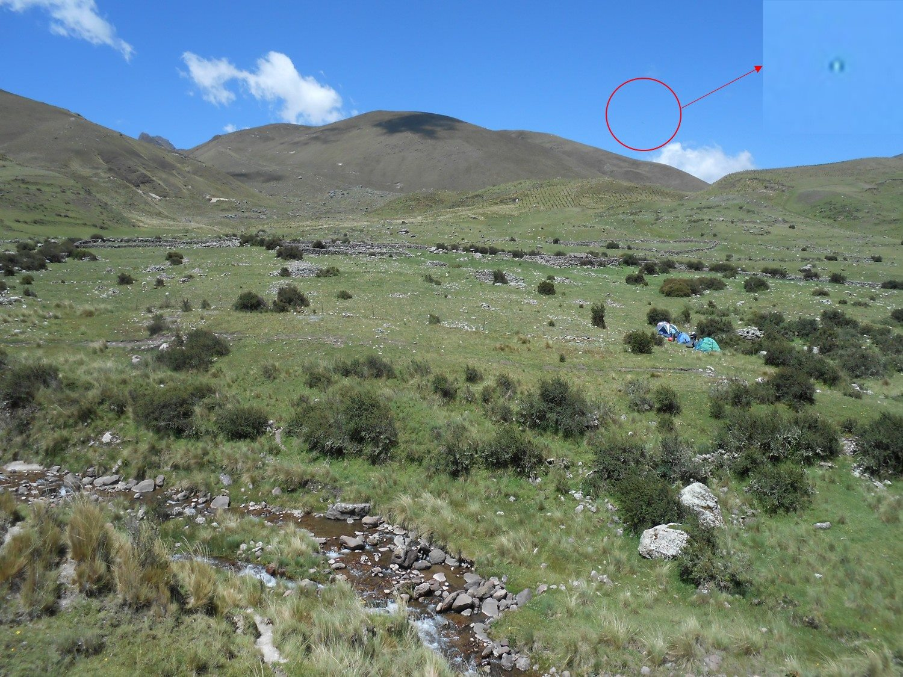
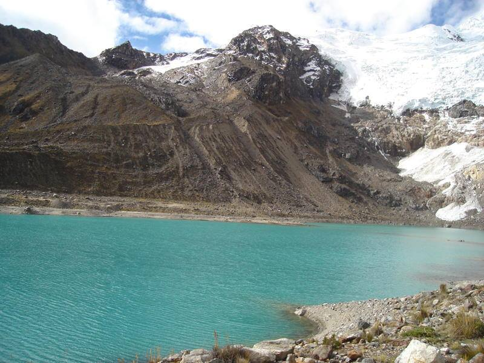

<!DOCTYPE html>
<html lang="es"></html>
<head>
  <meta charset="UTF-8"/>
  <link rel="icon" type="image/png" href="img/favicon1.gif"/>
  <link rel="stylesheet" href="css/estilo.css"/>
  <link rel="stylesheet" href="css/simplegrid.css"/>
  <title>MISIÓN RAHMA | ENCUENTRO MUNDIAL</title>
</head>
<body>
  <div id="particles-js" class="contenedor"></div>
  <section class="menu">
    <div class="grid">
      <div class="col-3-12">
        <h1>MISIÓN RAHMA </h1>
      </div>
      <div class="col-9-12"></div>
    </div>
  </section>
  <section class="header">
    <div class="grid grid-pad">
      <div class="col-1-1">
        <h1>ENCUENTRO MUNDIAL MISIÓN RAHMA</h1>
        <h2>5, 6, 7 y 8 de agosto 2016 – Huancayo-Perú</h2>
        <h2>Achapa - Acopalca</h2>
        <h3>Armonía, Fuerza, Amor</h3>
      </div>
    </div>
  </section>
  <section class="information">
    <div class="grid grid-pad">
      <div class="col-3-12 hide-on-mobile">					</div>
      <div class="col-9-12">
        <p>Hermanas y hermanos en la Luz:</p>
        <p>El Plan de la Gran Hermandad Blanca de la Estrella preveía que el 22 de enero de 1974 se iniciara en el Perú una “Misión Sol en la Tierra” basada en la perfecta Armonía, con mucha Fuerza y sobre todo en Amor. Mucha Luz ha llegado que nos animó a construir el puente, el puente de ayuda más grande que se haya conocido, ser los “constructores” de ese puente desde el más profundo abismo. Durante estos 42 años ha sido nuestra labor, prepararnos y construir, para ser ahora puentes de la madurez, del cambio y la vivencia espiritual. Ser puente con la Hermandad Blanca del Universo.</p>
        <p>El Encuentro Mundial Misión Rahma 2016, se encamina a ser ese poema, esa Comunión de Almas. Es decir: Un reencuentro con afinidad de sentimientos; con coincidencia de ideales; con sintonía espiritual; con compañerismo y trato de amigos; con relación y participación con voluntad; con convivencia y con-tacto entre todos. Una verdadera confraternidad y unión.</p>
        <p>Durante la salida realizada los dias Sábado 7 y domingo 8 de noviembre de 2015 en Puyhuan, Los Molinos-Jauja. En meditación se recibió el slogan para los Encuentros. <b>“Armonía, Fuerza, Amor”</b>. Es muy importante que cada uno de nosotros trabajemos en crear las condiciones para el mejor resultado de este Encuentro, el lugar será donde mejor se pudiera desarrollar este evento. El lugar es el indicado. Lo primordial es y será la preparación y la actitud de los que asistan, enfatizamos con claridad que es un Encuentro Rahma, con lineamientos y pautas Rahma, no olvidarse de esto. Es lo básico, lo decimos claro para evitar malos entendidos o confusiones. Este tiempo exige claridad.</p>
        <p>Todos los grupos del Perú y del mundo aguardan el gran momento de reunión, pues las vibraciones propician para que se asista con mucha fuerza, en este tiempo importante de Misión y del mundo: <b>Agosto 2016</b>. Nuestra palabra debe ser dirigida a la Luz y a la verdad, nuestra palabra debe ser dirigida a la única razón universal. El Amor. Debe ser motivo de dicha, alegría y unión.</p>
        <p>Fecha de inscripción improrrogable 30 de Junio 2016. (Para el 20 de Mayo 2016, suplicamos a todos que han decidido su participación adelantarnos su asistencia: necesitamos conocer con cuantos hermanos vamos a contar en el Encuentro Mundial, para la logística correspondiente).</p><a href="https://docs.google.com/document/d/1sHHqkZ0sBDmmpBM2kdiPcEZA6ceO9sRwqnHIGoavqCo/edit" target="_blank">Ficha de Inscripción</a>
      </div>
    </div>
    <!-- Anexo-->
    <section class="anexo">
      <div class="col-3-12 hide-on-mobile"></div>
      <div class="col-9-12">
        <div class="grid grid-pad">
          <h1>información</h1>
          <hr/>
        </div>
        <div class="grid grid-pad">
          <div class="col-1-4"><a href="https://docs.google.com/document/d/11sP-vVTSIs8qZnuzIEyixJzuqE_phbQvi_1Owzm-KZI/edit?usp=sharing" target="_blank">
              <button class="content box">
                <h2>Anexo Uno</h2>
                <h3>Armonía, Fuerza, Amor</h3>
              </button></a></div>
          <div class="col-1-4"><a href="https://docs.google.com/document/d/1HL8GbgMrsc1FrhOz-DGYNeC44SsX1S7P-uToX49ffek/edit?usp=sharing" target="_blank">
              <button class="content box">
                <h2>Anexo Dos</h2>
                <h3>RECOMENDACIONES</h3>
              </button></a></div>
          <div class="col-1-4"><a href="https://docs.google.com/document/d/1XnmLhjUMTNcGR_VTmIuegn5lemxPGRZ3TPZAACodGbE/edit?usp=sharing" target="_blank">
              <button class="content box">
                <h2>Anexo Tres</h2>
                <h3>COMUNICACIONES</h3>
              </button></a></div>
          <div class="col-1-4"><a href="https://docs.google.com/document/d/1V-3iZUmN2GeDpEXjWQRJVASrWF6T0wXnxMSyPsXij4I/edit?usp=sharing" target="_blank">
              <button class="content box">
                <h2>Anexo Cuatro</h2>
                <h3>42º ANIVERSARIO DE MISIÓN RAHMA</h3>
              </button></a></div>
        </div>
      </div>
    </section>
    <!-- Inscripcion-->
    <section class="datos">
      <div class="col-3-12"></div>
      <div class="col-9-12">
        <div class="grid grid-pad">
          <div class="content"></div>
          <h1>Programa del encuentro Mundial</h1>
          <hr/>
        </div>
        <div class="grid grid-pad">
          <div class="accordion">
            <dl>
              <dt><a href="#accordion1" aria-expanded="false" aria-controls="accordion1" class="accordion-title accordionTitle js-accordionTrigger">Día de Adaptación: Viernes, 5 de agosto 2016</a></dt>
              <dd id="accordion1" aria-hidden="true" class="accordion-content accordionItem is-collapsed">
                <h2>Recepción y ceremonia de recepción</h2>
                <ul>
                  <li>6:00 a 10:00 Recepción a los hermanos</li>
                  <li>13:00 – 16:30 Libre (Para conocer Huancayo y aprovisionarse de lo que les podría faltar para la salida)</li>
                  <li>17:00 Ceremonia de Recepción con programa especial.</li>
                </ul>
              </dd>
              <dt><a href="#accordion2" aria-expanded="false" aria-controls="accordion2" class="accordion-title accordionTitle js-accordionTrigger">Día de la Armonía: Sábado, 6 de agosto 2016</a></dt>
              <dd id="accordion1" aria-hidden="true" class="accordion-content accordionItem is-collapsed">
                <h2></h2>
                <p> El Plan busca lograr que la armonía y vibración grupal sea coherente al trabajo de los siglos. Es un proceso previo, un acondicionamiento para llegar a un estado de armonía y disposición de todos los participantes, esto nos beneficiará,</p>
                <p>Todo se hará en armonía y con la participación consciente de los hermanos. Estamos seguros que la Jerarquía Celeste apoyará de cerca nuestro trabajo en Achapa, así como a la salida a la montaña, que nos alegrará. Vivamos la alegría del compartir, del aceptar, del vivir plenamente y en armonía perfecta con el cosmos.</p>
                <p>Si nuestro planeta ha sufrido y sufre muchos cambios geológicos son el resultado de la falta de armonía. Nuestra tarea es polarizar con nuestra armonía.</p>
                <h2>Salida con campamento.</h2>
                <p>Está dicho: “Integración total y trabajar más con nosotros mismos para que el con-tacto sea más cercano, fluido y profundo entre los hermanos asistentes. Somos el reflejo del mundo, si trascendemos los conflictos y diferencias en nuestro interior, nuestro mundo encontrará el camino para superarlo todo”.</p>
                <ul>
                  <li>8:00 Traslado desde la ciudad de Huancayo en buses al lugar del campamento Achapa. Punto de reunión-Plaza Constitución (Costado de la Catedral-Huancayo)</li>
                  <li>10:00    Llegada, permiso y armonización con el lugar.</li>
                  <li>Presentación de los participantes.</li>
                  <li>Armado de carpas en el campamento. (Tomar mate de coca y descanso de aclimatación)</li>
                  <li>12:00 Inicio de los trabajos. Activar la conexión general con el espíritu planetario a través del perdón. Procurando sentir la conciencia colectiva, dejándonos inspirar por el espíritu planetario y se manifieste, actué y se revele a través de nosotros.</li>
                  <li>15:00 Meditación de conexión (Recepción de comunicaciones)</li>
                  <li>16:00 Definir las líneas de acción, para nuestro trabajo.</li>
                </ul>
              </dd>
              <dt><a href="#accordion2" aria-expanded="false" aria-controls="accordion2" class="accordion-title accordionTitle js-accordionTrigger">Día de la Fuerza: Domingo, 7 de agosto 2016</a></dt>
              <dd id="accordion1" aria-hidden="true" class="accordion-content accordionItem is-collapsed">
                <h2></h2>
                <p>Dios es la fuerza de Amor que sostiene el Universo y nos baña con su Luz de Amor. Es muy importante y vital meditar en Él.</p>
                <p>Dediquémonos por mantener con Fuerza de Voluntad, una sola línea y todo será complemento de esto. Caminemos con la fuerza que los Maestros consiguen manifestar a través de sus actos. Despertemos con la fuerza del recuerdo de que ya venimos sirviendo a la Misión desde hace mucho tiempo.</p>
                <p>La Hermandad Blanca, el Retiro Interior, El Maestro Jesús y nuestros Guías extraterrestres nos esperan, ellos estarán muy cerca. Logremos la preparación, la fuerza y la armonía para que todo lo que esté dispuesto por alto se dé.</p>
                <p>Huaytapallana es buen lugar, Achapa será un buen momento para el recogimiento y preparación, obedeciendo a la fuerza que motiva a no escatimar esfuerzo en la preparación.</p>
                <p>“Las fuerzas se encuentran en el camino de la Luz, vuestra fuerza debe de ser tanta o más que la que viene manteniendo el equilibrio cósmico”. (Titinac 16-12-1985)</p>
                <p>“El hombre fuerte sabe ser débil ante el sentimiento más conmovedor. El hombre sabio sabe reconocerse ignorante ante el mensaje más sencillo del niño que se transmite con actitudes. En vuestra debilidad está vuestra fuerza, en vuestra sencillez vuestra sabiduría”. (Joaquín. 28-12-1985)</p>
                <ul>
                  <li>8:00 Ejercicios Psicofísicos.</li>
                  <li>10:00 Meditación Xolar.</li>
                  <li>12:00 Toma de Energía Cilial.</li>
                  <li>12:30 Activación y conexión con el Disco Xolar con el mantra AM-ON e irradiación al planeta.</li>
                  <li>15.00 Meditación de conexión (Recepción de comunicaciones)</li>
                  <li>16:00 Conciliar nuestras iniciativas con el Gran Plan dispuesto por la Jerarquía.</li>
                </ul>
              </dd>
              <dt><a href="#accordion2" aria-expanded="false" aria-controls="accordion2" class="accordion-title accordionTitle js-accordionTrigger">Día del Amor: Lunes, 8 de agosto 2016</a></dt>
              <dd id="accordion1" aria-hidden="true" class="accordion-content accordionItem is-collapsed">
                <h2></h2>
                <p>Desde el origen se emanó Amor y su irradiación llega a nuestros corazones para buscar el origen de los orígenes en el Amor. El Amor y el respeto natural a las leyes básicas y fundamentales que llenan en armonía el universo que aún no conocemos, pero podemos palparlo.</p>
                <p>Cada vez que miramos al cielo contemplamos lo vasto de este Universo, hemos aprendido que de cualquier pequeña estrella que brilla, esa luz aunque lejana nos llegará, así es el Amor de Dios, solo nos falta sentir, como a ese pequeño brillo, ni las tinieblas ni las distancias más grandes lograran apagar.</p>
                <p>Será por ello que se nos dijo que el Amor debe brillar en nosotros, ese brillo será la señal, por lo cual nos reconoceremos y no nos confundirán aquellos que buscan perdernos.</p>
                <p>Los amados Veinticuatro Ancianos, La Hermandad Blanca, El Retiro Interior. El Maestro Jesús, La Dama de Luz, nuestros Guías nos esperan en el nevado, el requisito principal es el Amor, se nos dijo que limpiemos nuestras vestiduras, que cada vez deben ser más blancas. Llegará el momento de comprender y entender, esperamos que en este Encuentro podamos saber más.</p>
                <p>“El Amor de Dios vibra en toda la Tierra y en los que serán sus misioneros de Luz” (11-2-1985, Los Guías de Rahma Misión)</p>
                <h2>Salida sin campamento.</h2>
                <p>“El número ocho es la madre, y representa el espíritu de la Tierra, símbolo de creación y regeneración; es una energía femenina que ha protegido la vida de nuestro mundo…”</p>
                <ul>
                  <li>7:00 Desarmado de Carpas.</li>
                  <li>8:00 Cierre de los trabajos.</li>
                  <li>9:00 Traslado en buses hasta la laguna Lasuhuntay – Nevado del Huaytapallana.</li>
                  <li>11:00 Trabajos de irradiación y conexión con la Santa Madre Tierra (Espíritu Planetario), con la Gran Hermandad Blanca, con el Retiro Interior, con el Maestro Jesús y con los Hermanos Mayores,</li>
                  <li>12:00 Reprogramación del Agua.</li>
                  <li>13:00 Conversatorio y conclusiones.</li>
                  <li>15:00 Retorno a Achapa</li>
                  <li>17:00 Cena de confraternidad y despedida.</li>
                </ul>
              </dd>
            </dl>
          </div>
        </div><span class="t">(El programa no es rígido, en armonía es posible su mejor adaptación).</span>
      </div>
    </section>
    <!-- Galeria-->
    <section class="galeria">
      <div class="col-3-12"></div>
      <div class="col-9-12">
        <div class="grid grid-pad">
          <div class="content"></div>
          <h1>Galería</h1>
          <hr/>
        </div>
        <div class="grid grid-pad">
          <div class="gallery">
            <div class="col-1-4">
              <div class="content">
                <li></li>
              </div>
            </div>
            <div class="col-1-4">
              <div class="content">
                <li></li>
              </div>
            </div>
            <div class="col-1-4">
              <div class="content">
                <li></li>
              </div>
            </div>
            <div class="col-1-4">
              <div class="content">
                <li></li>
              </div>
            </div>
            <div class="col-1-4">
              <div class="content">
                <li></li>
              </div>
            </div>
            <div class="col-1-4">
              <div class="content">
                <li></li>
              </div>
            </div>
            <div class="col-1-4">
              <div class="content">
                <li></li>
              </div>
            </div>
            <div class="col-1-4">
              <div class="content">
                <li></li>
              </div>
            </div>
          </div>
        </div>
      </div>
    </section>
    <!-- Contacto-->
    <section class="contacto">
      <div class="col-3-12 hide-on-mobile"></div>
      <div class="col-9-12">
        <div class="grid grid-pad">
          <h1>contacto</h1>
          <hr/>
        </div>
        <div class="grid">
          <div class="col-6-12">
            <ul>
              <li>Rebeca Landeo - 998081888</li>
              <li>José Ramírez - 964611253</li>
              <li>Francisco Sosa 51 + 064-253978</li>
              <li>fgsm7@yahoo.es</li>
            </ul>
          </div>
        </div>
      </div>
    </section>
    <!-- Footer-->
    <section class="footer">
      <div class="grid grid-pad">
        <div class="col-1-1">
          <p>MISIÓN RAHMA HUANCAYO - 2016 | @indiedevlop</p>
        </div>
      </div>
    </section>
  </section>
  <!-- JS-->
  <script src="http://cdn.jsdelivr.net/particles.js/2.0.0/particles.min.js"></script>
  <script src="js/indiedevlop.js"></script>
</body>